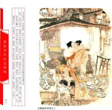

第九回 西门庆偷娶潘金莲 武都头误打李皂隶#

诗曰：
感郎耽夙爱，着意守香奁。岁月多忘远，情综任久淹。
于飞期燕燕，比翼誓鹣鹣。细数从前意，时时屈指尖。
话说西门庆与潘金莲烧了武大灵，到次日，又安排一席酒，请王婆作辞，就把迎儿交付与王婆看养。因商量道：“武二回来，却怎生不与他知道六姐是我娶了才好？”王婆笑道：“有老身在此，任武二那厮怎地兜达，我自有话回他。大官人只管放心！”西门庆听了，满心欢喜，又将三两银子谢他。当晚就将妇人箱笼，都打发了家去，剩下些破桌、坏凳、旧衣裳，都与了王婆。到次日初八，一顶轿子，四个灯笼，妇人换了一身艳色衣服，王婆送亲，玳安跟轿，把妇人抬到家中来。那条街上，远近人家无一不知此事，都惧怕西门庆有钱有势，不敢来多管，只编了四句口号，说得好：
堪笑西门不识羞，先奸后娶丑名留。轿内坐着浪淫妇，后边跟着老牵头。
西门庆娶妇人到家，收拾花园内楼下三间与他做房。一个独独小角门儿进去，院内设放花草盆景。白日间人迹罕到，极是一个幽僻去处。一边是外房，一边是卧房。西门庆旋用十六两银子买了一张黑漆欢门描金床，大红罗圈金帐幔，宝象花拣妆，桌椅锦杌，摆设齐整。大娘子吴月娘房里使着两个丫头，一名春梅，一名玉箫。西门庆把春梅叫到金莲房内，令他伏侍金莲，赶着叫娘。却用五两银子另买一个小丫头，名叫小玉，伏侍月娘。又替金莲六两银子买了一个上灶丫头，名唤秋菊。排行金莲做第五房。先头陈家娘子陪嫁的，名唤孙雪娥，约二十年纪，生的五短身材，有姿色。西门庆与他戴了鬏髻，排行第四，以此把金莲做个第五房。此事表过不题。
这妇人一娶过门来，西门庆就在妇人房中宿歇，如鱼似水，美爱无加。到第二日，妇人梳妆打扮，穿一套艳色服，春梅捧茶，走来后边大娘子吴月娘房里，拜见大小，递见面鞋脚。月娘在座上仔细观看，这妇人年纪不上二十五六，生的这样标致。但见：
眉似初春柳叶，常含着雨恨云愁；脸如三月桃花，暗带着风情月意。纤腰袅娜，拘束的燕懒莺慵；檀口轻盈，勾引得峰狂蝶乱。玉貌妖娆花解语，芳容窈窕玉生香。
吴月娘从头看到脚，风流往下跑；从脚看到头，风流往上流。论风流，如水泥晶盘内走明珠；语态度，似红杏枝头笼晓日。看了一回，口中不言，心内想道：“小厮每来家，只说武大怎样一个老婆，不曾看见，不想果然生的标致，怪不的俺那强人爱他。”金莲先与月娘磕了头，递了鞋脚。月娘受了他四礼。次后李娇儿、孟玉楼、孙雪娥，都拜见了，平叙了姊妹之礼，立在旁边。月娘叫丫头拿个坐儿教他坐，吩咐丫头、媳妇赶着他叫五娘。这妇人坐在旁边，不转睛把众人偷看。见吴月娘约三九年纪，生的面如银盆，眼如杏子，举止温柔，持重寡言。第二个李娇儿，乃院中唱的，生的肌肤丰肥，身体沉重，虽数名妓者之称，而风月多不及金莲也。第三个就是新娶的孟玉楼，约三十年纪，生得貌若梨花，腰如杨柳，长挑身材，瓜子脸儿，稀稀多几点微麻，自是天然俏丽，惟裙下双湾与金莲无大小之分。第四个孙雪娥，乃房里出身，五短身材，轻盈体态，能造五鲜汤水，善舞翠盘之妙。这妇人一抹儿都看在心里。过三日之后，每日清晨起来，就来房里与月娘做针指，做鞋脚，凡事不拿强拿，不动强动。指着丫头赶着月娘，一口一声只叫大娘，快把小意儿贴恋几次，把月娘喜欢得没入脚处，称呼他做六姐。衣服首饰拣心爱的与他，吃饭吃茶都和他在一处。因此，李娇儿众人见月娘错敬他，都气不忿，背后常说：“俺们是旧人，到不理论。他来了多少时，便这等惯了他。大姐姐好没分晓！”西门庆自娶潘金莲来家，住着深宅大院，衣服头面又相趁，二人女貌郎才，正在妙年之际，凡事如胶似漆，百依百随，淫欲之事，无日无之。且按下不题。
单表武松，八月初旬到了清河县，先去县里纳了回书。知县见了大喜，已知金宝交得明白，赏了武松十两银子，酒食管待，不必细说。武松回到下处，换了衣服鞋袜，戴了一顶新头巾，锁了房门，一径投紫石街来。两边众邻舍看见武松回来，都吃一惊，捏两把汗，说道：“这番萧墙祸起了！这个太岁归来，怎肯干休！”武松走到哥哥门前，揭起帘子，探身入来，看见小女迎儿在楼穿廊下撵线。叫声哥哥也不应，叫声嫂嫂也不应，道：“我莫不耳聋了，如何不见哥嫂声音？”向前便问迎儿。那迎儿见他叔叔来，吓的不敢言语。武松道：“你爹娘往那里去了？”迎儿只是哭，不做声。正问间，隔壁王婆听得是武二归来，生怕决撒了，慌忙走过来。武二见王婆过来，唱了喏，问道：“我哥哥往那里去了？嫂嫂也怎的不见？”婆子道：“二哥请坐，我告诉你。你哥哥自从你去后，到四月间得个拙病死了。”武二道：“我哥哥四月几时死的？得什么病？吃谁的药来？”王婆道：“你哥哥四月二十头，猛可地害起心疼起来，病了八九日，求神问卜，什么药不吃到？医治不好，死了。”武二道：“我的哥哥从来不曾有这病，如何心疼便死了？”王婆道：“都头却怎的这般说？天有不测风云，人有旦夕祸福。今晚脱了鞋和袜，未审明朝穿不穿。谁人保得常没事？”武二道：“我哥哥如今埋在那里？”王婆道：“你哥哥一倒了头，家中一文钱也没有，大娘子又是没脚蟹，那里去寻坟地？亏左近一个财主旧与大郎有一面之交，舍助一具棺木，没奈何放了三日，抬出去火葬了。”武二道：“如今嫂嫂往那里去了？”婆子道：“他少女嫩妇的，又没的养赡过日子。胡乱守了百日孝，他娘劝他，前月嫁了外京人去了。丢下这个业障丫头子，教我替他养活。专等你回来交付与你，也了我一场事。”武二听言，沉吟了半晌，便撇下王婆出门去，迳投县前下处。开了门进房里，换了一身素衣，便叫土兵街上打了一条麻绦，买了一双绵裤，一顶孝帽戴在头上；又买了些果品点心、香烛冥纸、金银锭之类，归到哥哥家，从新安设武大灵位。安排羹饭，点起香烛，铺设酒肴，挂起经幡纸缯，安排得端正。约一更已后，武二拈了香，扑翻身便拜，道：“哥哥阴魂不远，你在世时，为人软弱，今日死后，不见分明。你若负屈含冤，被人害了，托梦与我，兄弟替你报冤雪恨！”把酒一面浇奠了，烧化冥纸，武二便放声大哭。终是一路上来的人，哭的那两边邻舍无不凄惶。武二哭罢，将这羹饭酒肴和土兵、迎儿吃了。讨两条席子，教土兵房外旁边睡，迎儿房中睡，他便自把条席子，就武大灵桌子前睡。
约莫将半夜时分，武二翻来覆去那里睡得着，口里只是长吁气。那土兵齁齁的却似死人一般，挺在那里。武二爬将起来看时，那灵桌子上琉璃灯半明半灭。武二坐在席子上，自言自语，口里说道：“我哥哥生时懦弱，死后却无分明。”说犹未了，只见那灵桌子下卷起一阵冷风来。但见：
无形无影，非雾非烟。盘旋似怪风侵骨冷，凛冽如杀气透肌寒。昏昏暗暗，灵前灯火失光明；惨惨幽幽，壁上纸钱飞散乱。隐隐遮藏食毒鬼，纷纷飘逐影魂幡。
那阵冷风，逼得武二毛发皆竖起来。定睛看时，见一个人从灵桌底下钻将出来，叫声：“兄弟！我死得好苦也！”武二看不仔细，却待向前再问时，只见冷气散了，不见了人。武二一交跌翻在席子上坐的，寻思道：“怪哉！似梦非梦。刚才我哥哥正要报我知道，又被我的神气冲散了。想来他这一死，必然不明。”听那更鼓，正打三更三点。回头看那土兵，正睡得好。于是咄咄不乐，只等天明，却再理会。
看看五更鸡叫，东方渐明。土兵起来烧汤，武二洗漱了，唤起迎儿看家，带领土兵出了门。在街上访问街坊邻舍：“我哥哥怎的死了？嫂嫂嫁得何人去了？”那街坊邻舍明知此事，都惧怕西门庆，谁肯来管？只说：“都头，不消访问，王婆在紧隔壁住，只问王婆就知了。”有那多口的说：“卖梨的郓哥儿与仵作何九，二人最知详细。”这武二竟走来街坊前去寻郓哥。只见那小猴子手里拿着个柳笼簸罗儿，正籴米回来。武二便叫郓哥道：“兄弟！”唱喏。那小厮见是武二叫他，便道：“武都头，你来迟了一步儿，须动不得手。只是一件，我的老爹六十岁，没人养赡，我却难保你们打官司。”武二道：“好兄弟，跟我来。”引他到一个饭店楼上，武二叫货卖造两分饭来。武二对郓哥道：“兄弟，你虽年幼，倒有养家孝顺之心。我没甚么──”向身边摸出五两碎银子，递与郓哥道：“你且拿去与老爹做盘费。待事务毕了，我再与你十来两银子做本钱。你可备细说与我：哥哥和甚人合气？被甚人谋害了？家中嫂嫂被那一个娶去？你一一说来，休要隐匿。”这郓哥一手接过银子，自心里想道：“这些银子，老爹也够盘费得三五个月，便陪他打官司也不妨。”一面说道：“武二哥，你听我说，却休气苦。”于是把卖梨儿寻西门庆，后被王婆怎地打他，不放进去，又怎地帮扶武大捉奸，西门庆怎的踢中了武大，心疼了几日，不知怎的死了，从头至尾细说了一遍。武二听了，便道：“你这话却是实么？”又问道：“我的嫂子实嫁与何人去了？”郓哥道：“你嫂子吃西门庆抬到家，待捣吊底子儿，自还问他实也是虚！”武二道：“你休说谎。”郓哥道：“我便官府面前，也只是这般说。”武二道：“兄弟，既然如此，讨饭来吃。”须臾，吃了饭。武二还了饭钱，两个下楼来，吩咐郓哥：“你回家把盘缠交与老爹，明日早上来县前，与我作证。”又问：“何九在那里居住？”郓哥道：“你这时候还寻何九？他三日前听见你回，便走的不知去向了。”这武二放了郓哥家去。
到第二日，早起，先在陈先生家写了状子，走到县门前。只见郓哥也在那里伺候，一直奔到厅上跪下，声冤起来。知县看见，认的是武松，便问：“你告什么？因何声冤？”武二告道：“小人哥哥武大，被豪恶西门庆与嫂潘氏通奸，踢中心窝，王婆主谋，陷害性命。何九朦胧入殓，烧毁尸伤。见今西门庆霸占嫂子在家为妾。见有这个小厮郓哥是证见。望相公作主则个。”因递上状子。知县接着，便问：“何九怎的不见？”武二道：“何九知情在逃，不知去向。”知县于是摘问了郓哥口词，当下退厅与佐二官吏通同商议。原来知县、县丞、主簿、典史，上下都是与西门庆有首尾的，因此官吏通同计较，这件事难以问理。知县随出来叫武松道：“你也是个本县中都头，怎不省得法度？自古捉奸见双，杀人见伤。你那哥哥尸首又没了，又不曾捉得他奸。你今只凭这小厮口内言语，便问他杀人的公事，莫非公道忒偏向么？你不可造次，须要自己寻思。”武二道：“告禀相公，这都是实情，不是小人捏造出来的。只望相公拿西门庆与嫂潘氏、王婆来，当堂尽法一番，其冤自见。若有虚诬，小人情愿甘罪。”知县道：“你且起来，待我从长计较。可行时，便与你拿人。”武二方才起来，走出外边，把郓哥留在屋里，不放回家。
早有人把这件事报与西门庆得知。西门庆听得慌了，忙叫心腹家人来保、来旺，身边带着银两，连夜将官吏都买嘱了。到次日早晨，武二在厅上指望告禀知县，催逼拿人。谁想这官人受了贿赂，早发下状子来，说道：“武松，你休听外人挑拨，和西门庆做对头。这件事欠明白，难以问理。圣人云：经目之事，犹恐未真；背后之言，岂能全信？你不可一时造次。”当该吏典在旁，便道：“都头，你在衙门里也晓得法律，但凡人命之事，须要尸、伤、病、物、踪，五件事俱完，方可推问。你那哥哥尸首又没了，怎生问理？”武二道：“若恁的说时，小人哥哥的冤仇，难道终不能报便罢了？既然相公不准所告，且却有理。”遂收了状子，下厅来。来到下处，放了郓哥归家，不觉仰天长叹一声，咬牙切齿，口中骂淫妇不绝。
武松是何等汉子，怎消洋得这口恶气！一直走到西门庆生药店前，要寻西门庆厮打。正见他开铺子的傅伙计在柜身里面，见武二狠狠的走来，问道：“你大官人在宅上么？”傅伙计认的是武二，便道：“不在家了。都头有甚话说？”武二道：“且请借一步说句。”傅伙计不敢不出来，被武二引到僻静巷口。武二翻过脸来，用手撮住他衣领，睁圆怪眼说道：“你要死，却是要活？”傅伙计道：“都头在上，小人又不曾触犯了都头，都头何故发怒？”武二道：“你若要死，便不要说；若要活时，对我实说。西门庆那厮如今在那里？我的嫂子被他娶了多少日子？一一说来，我便罢休？”那傅伙计是个小胆的人，见武二发作，慌了手脚，说道：“都头息怒，小人在他家，每月二两银子雇着，小人只开铺子，并不知他们闲帐。大官人本不在家，刚才和一相知，往狮子街大酒楼上吃酒去了。小人并不敢说谎。”武二听了此言，方才放了手，大叉步飞奔到狮子街来。吓的傅伙计半日移脚不动。那武二迳奔到狮子街桥下酒楼前来。
且说西门庆正和县中一个皂隶李外传在楼上吃酒。原来那李外传专一在府县前绰揽些公事，往来听气儿撰些钱使。若有两家告状的，他便卖串儿；或是官吏打点，他便两下里打背。因此县中就起了他这个浑名，叫做李外传。那日见知县回出武松状子，讨得这个消息，便来回报西门庆知道。因此西门庆让他在酒楼上饮酒，把五两银子送他。正吃酒在热闹处，忽然把眼向楼窗下看，只见武松似凶神般从桥下直奔酒楼前来。已知此人来意不善，不觉心惊，欲待走了，却又下楼不及，遂推更衣，走往后楼躲避。武二奔到酒楼前，便问酒保道：“西门庆在此么？”酒保道：“西门大官人和一相识在楼上吃酒哩。”武二拨步撩衣，飞抢上楼去。早不见了西门庆，只见一个人坐在正面，两个唱的粉头坐在两边。认的是本县皂隶李外传，就知是他来报信，不觉怒从心起，便走近前，指定李外传骂道：“你这厮，把西门庆藏在那里去了？快说了，饶你一顿拳头！”李外传看见武二，先吓呆了，又见他恶狠狠逼紧来问，那里还说得出话来！武二见他不则声，越加恼怒，便一脚把桌子踢倒，碟儿盏儿都打得粉碎。两个粉头吓得魂都没了。李外传见势头不好，强挣起身来，就要往楼下跑。武二一把扯回来道：“你这厮，问着不说，待要往那里去？且吃我一拳，看你说也不说！”早飕的一拳，飞到李外传脸上。李外传叫声啊呀，忍痛不过，只得说道：“西门庆才往后楼更衣去了，不干我事，饶我去罢！”武二听了，就趁势儿用双手将他撮起来，隔着楼窗儿往外只一兜，说道：“你既要去，就饶你去罢！”扑通一声，倒撞落在当街心里。武二随即赶到后楼来寻西门庆。此时西门庆听见武松在前楼行凶，吓得心胆都碎，便不顾性命，从后楼窗一跳，顺着房檐，跳下人家后院内去了。武二见西门庆不在后楼，只道是李外传说谎，急转身奔下楼来，见李外传已跌得半死，直挺挺在地下，还把眼动。气不过，兜裆又是两脚，早已哀哉断气身亡。众人道：“这是李皂隶，他怎的得罪都头来？为何打杀他？”武二道：“我自要打西门庆，不料这厮悔气，却和他一路，也撞在我手里。”那地方保甲见人死了，又不敢向前捉武二，只得慢慢挨上来收笼他，那里肯放松！连酒保王鸾并两个粉头包氏、牛氏都拴了，竟投县衙里来。此时哄动了狮子街，闹了清河县，街上议论的人，不计其数。却不知道西门庆不该死，倒都说是西门庆大官人被武松打死了。正是：
李公吃了张公酿，郑六生儿郑九当。世间几许不平事，都付时人话短长。